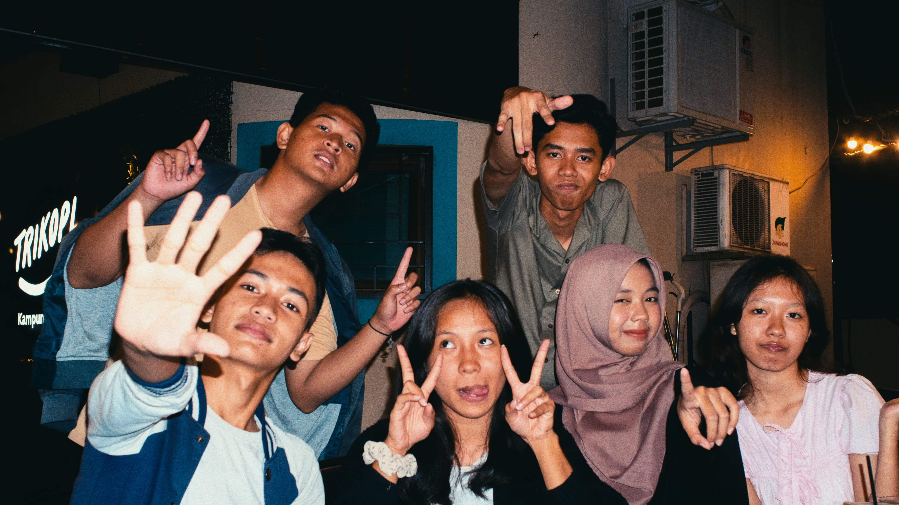
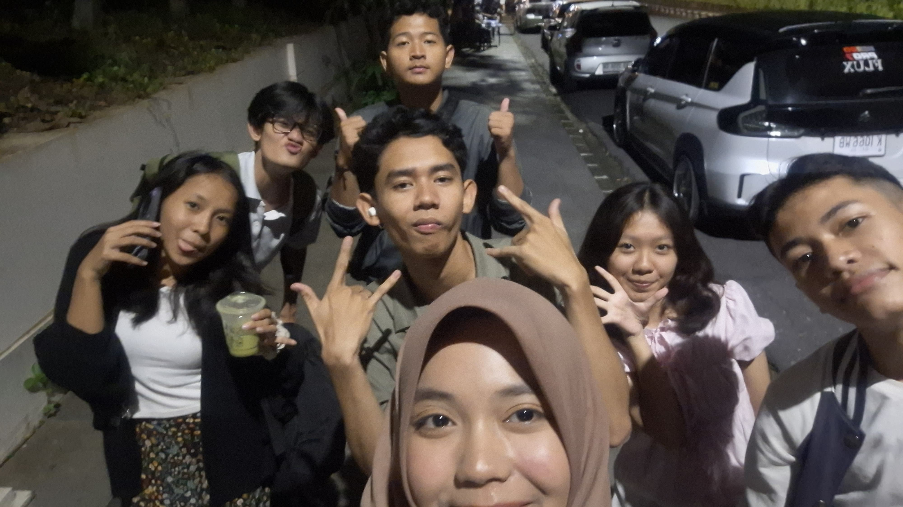
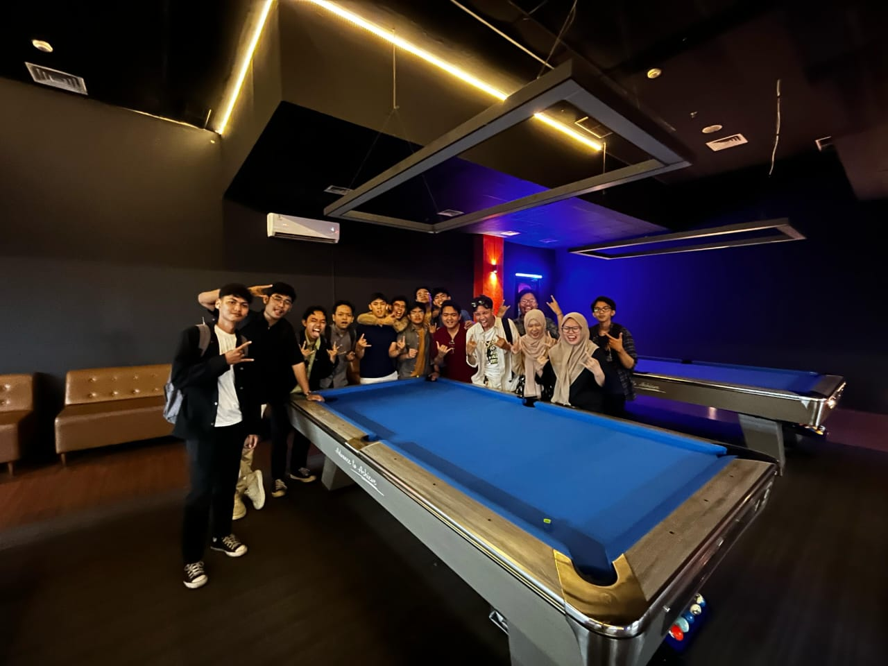
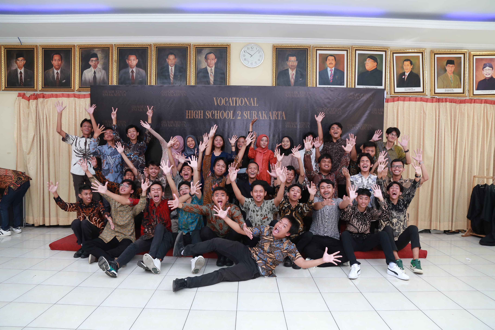
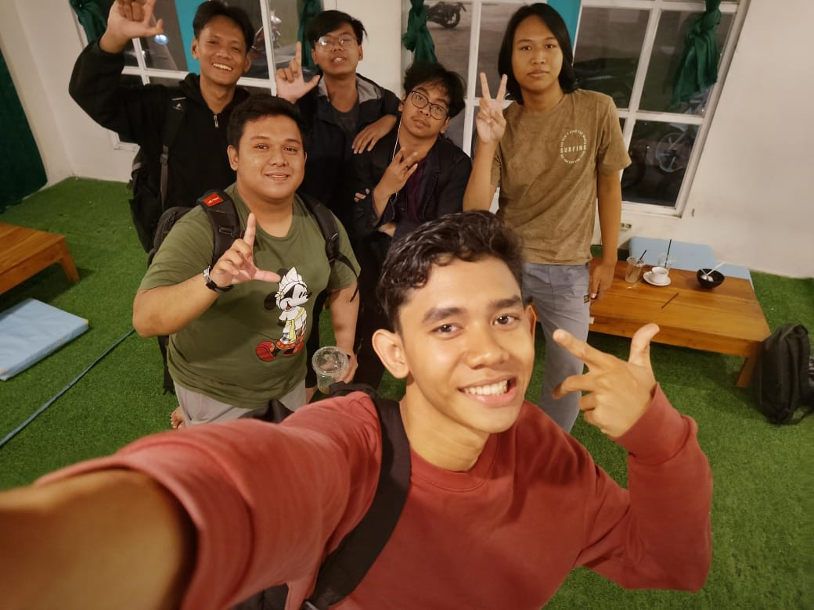
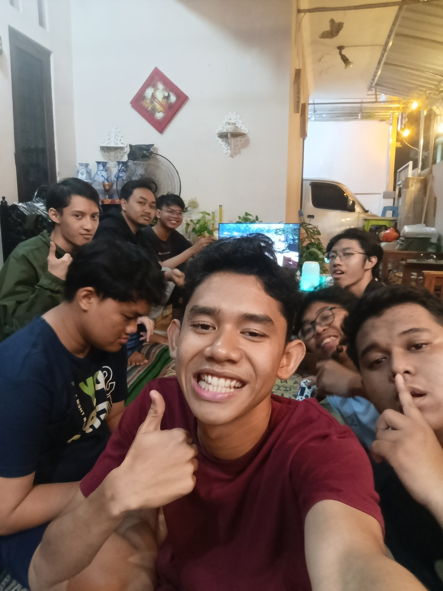
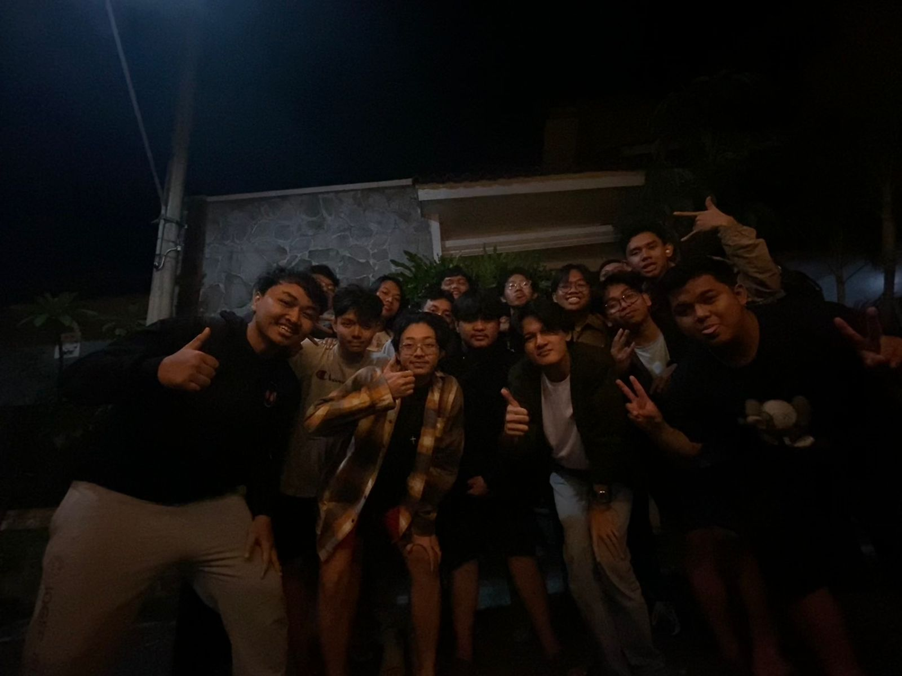
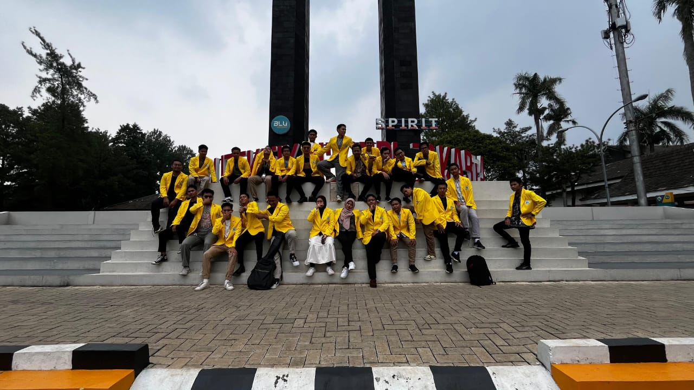

Meet With My Friends!
Tidak banyak hal yang bisa saya ceritakan tentang teman-teman saya. Saya memiliki cukup banyak teman yang berasal dari Solo dan Depok. Masing-masing dari mereka memiliki keunikan dan ciri khasnya sendiri, dan saya merasa senang bisa berteman dengan mereka. Dari mereka, saya juga belajar banyak hal baik tentang kehidupan, tata krama, hingga pengembangan keterampilan yang membantu membentuk diri saya hingga seperti sekarang ini. berikut ini adalah beberapa kumpulan foto dari teman" saya.







